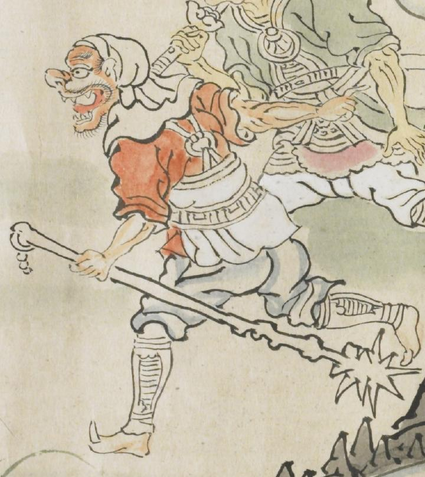

棍棒のような武器をもった鬼。赤い服に鎧を身にまとい、頭には白布を巻いている。大きく口を開き、後方を指差している。
出典：親書誌：U426_nichibunken_0079：酒天童子絵巻；シュテンドウジエマキ／日付：2006／資源識別子：U426_nichibunken_0079_0002_0002
Copyright (c)2010- International Research Center for Japanese Studies, Kyoto, Japan. All rights reserved.